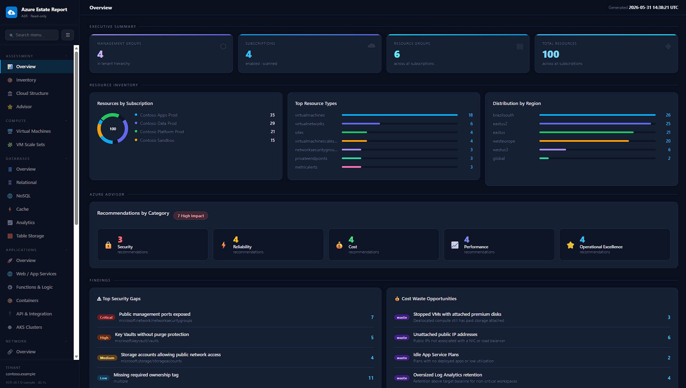
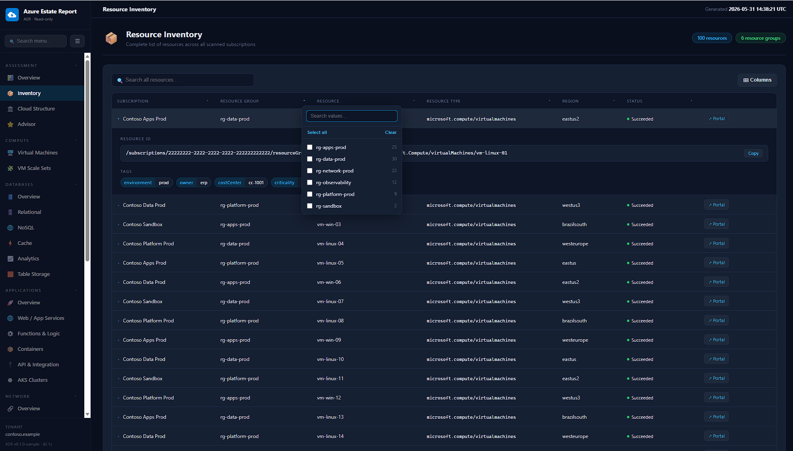

Cloud architecture
Reference implementations, reports and practical assets focused on Microsoft Azure and modern cloud platforms.
TrimTechBR is a personal initiative by two friends — Henderson Andrade and Henrique Mizael — building and open-sourcing practical tools for cloud professionals, infrastructure teams and DevOps practitioners. Our first project is AER — Azure Estate Report: read-only, fully-offline HTML dashboards for your Azure estate, generated from a single PowerShell command.

The website is structured as a portfolio and documentation hub, so every TrimTechBR solution can have its own overview, architecture notes and installation guide.
Reference implementations, reports and practical assets focused on Microsoft Azure and modern cloud platforms.
Scripts, reusable PowerShell modules and automation patterns for repeatable infrastructure and operational workflows.
Documentation and examples designed to work across CI/CD platforms, with clean project structures and standards.
Everything we build is open source. AER — Azure Estate Report is our first project; more are on the way as we find time to build them.

A PowerShell 7 module that connects to Azure with your existing credentials, collects a read-only inventory through Azure Resource Graph and ARM REST APIs, and renders a rich, multi-page, self-contained HTML report — plus Excel and PDF exports.
TrimTechBR is built in our spare time by Henderson and Henrique — open-source tools we wished we had. AER is just the first; more are on the way.
TrimTechBR focuses on practical assets that can be used, studied, adapted and improved by cloud professionals who deal with real-world infrastructure, operations and automation challenges.
Learn more about us